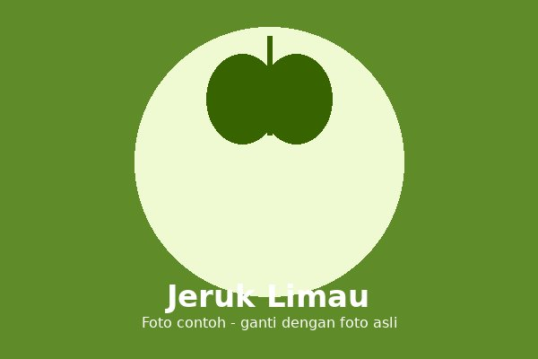

Jeruk limau adalah tanaman jeruk berukuran kecil yang buahnya sering digunakan sebagai penyegar rasa pada masakan dan minuman khas Indonesia.
Jeruk limau is a small citrus plant whose fruit is often used to freshen the flavor of Indonesian dishes and drinks.
Cocok tumbuh di dataran rendah hingga menengah dengan sinar matahari cukup dan tanah yang subur.
Suitable for lowland to medium-elevation areas with enough sunlight and fertile soil.